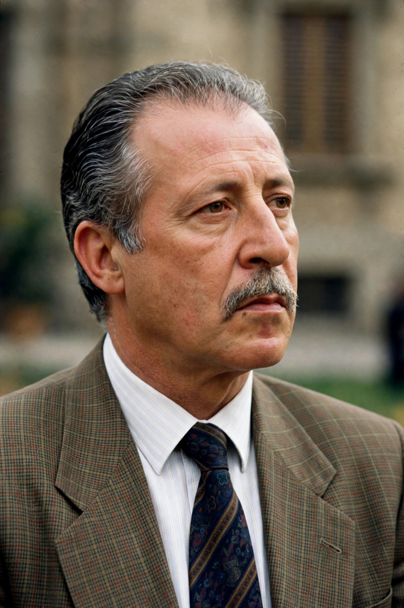

Paolo Emanuele Borsellino (19 January 1940 - 19 July 1992) was an Italian magistrate and prosecuting judge who became one of the leading figures in the fight against the Sicilian Mafia. Working closely with his friend and colleague Giovanni Falcone in Palermo's Antimafia Pool, he helped prepare the Maxi Trial of 1986-87. He was assassinated by the Mafia in a car bombing in Via D'Amelio, Palermo, less than two months after Falcone's murder in the Capaci bombing.

Borsellino, symbol of Italy's antimafia struggle.
| Paolo Borsellino | |
| Born | 19 January 1940, Palermo, Sicily, Italy |
|---|---|
| Died | 19 July 1992 (aged 52), Palermo, Sicily |
| Cause of death | Assassinated by the Sicilian Mafia (car bomb) |
| Occupation | Magistrate, prosecuting judge |
| Known for | Antimafia Pool; Maxi Trial investigations |
Born in Palermo's Kalsa district, Borsellino graduated in law from the University of Palermo in 1962 and entered the judiciary in 1963. He investigated Mafia crime in western Sicily and in 1980 arrested six mafiosi, an early breakthrough. He joined the Antimafia Pool organised by Rocco Chinnici and led by Antonino Caponnetto, working with Falcone and others on the investigations - drawing on the testimony of pentito Tommaso Buscetta - that produced the Maxi Trial, which convicted hundreds of mafiosi. After Caponnetto's retirement Borsellino was controversially passed over for leadership of the Pool and took posts in Marsala and then Palermo.
After Falcone's murder on 23 May 1992, Borsellino - knowing he was likely next - accelerated his work, investigating links between the Mafia, business and politics. On 19 July 1992 a Fiat 126 packed with explosives detonated in Via D'Amelio outside his mother's apartment building, killing Borsellino and five police escort officers: Agostino Catalano, Emanuela Loi, Vincenzo Li Muli, Walter Eddie Cosina and Claudio Traina. His red agenda diary, the famous agenda rossa, vanished from the scene and has never been recovered, fuelling decades of investigation into possible state-Mafia collusion.
Borsellino and Falcone are honoured across Italy; Palermo's airport is named Falcone-Borsellino, and schools, streets and squares bear Borsellino's name. His televised speeches and his final interviews remain touchstones of civic antimafia education.